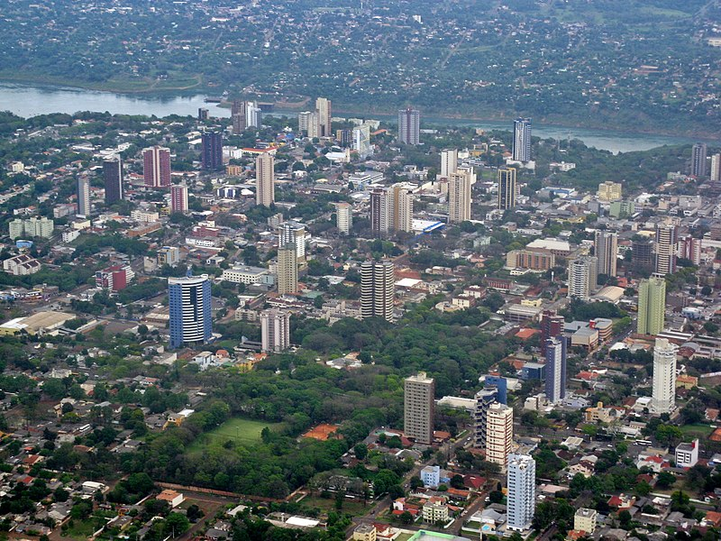

Sobre a cidade
Foz do Iguaçu é um município brasileiro localizado na região oeste do estado do Paraná.
Sua área territorial é de 617,701 km², dos quais 61,200 km² estão em perímetro urbano,e sua população,conforme o censo de 2022, é de 285 415 habitantes.
Segundo artigo publicado pela revista Exame, em março de 2014, é o terceiro destino de turistas estrangeiros no país e o primeiro da região sul.
Conhecida pelos seus pontos turísticos como Cataratas do Iguaçu, a Usina Hidrelétrica de Itaipu, o Marco das Três Fronteiras, entre outros.
Cataratas do Iguaçu
As Cataratas do Iguaçu são um espetáculo natural. São formadas por mais de 275 quedas d'água, sendo a Garganta do Diabo a mais famosa e seu nome vem do tupi-guarani e significa "água grande".
A região é rica em biodiversidade e abriga várias espécies ameaçadas de extinção, e o parque está assentado sobre o Aquífero Guarani, uma das maiores reservas mundiais de água subterrânea.
O parque está aberto diariamente das 8h às 16h

Usina Hidrelétrica de Itaipu
A Usina Hidrelétrica de Itaipu Binacional é a maior hidrelétrica do mundo em capacidade instalada.
Está localizada no Rio Paraná, na fronteira entre Brasil e Paraguai. Gera energia limpa e renovável,é um símbolo de cooperação entre os dois países, é uma importante fonte de renda para os dois países, desempenha um papel importante no fornecimento de energia sustentável para ambos os países.
A palavra Itaipu é de origem tupi-guarani que significa "pedra que canta" ou "pedra na qual a água faz barulho"